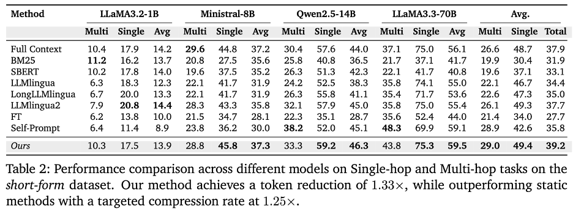

We enable language models to process only the necessary part of an input. Our method uses internal signals from the attention heads to determine when the model has gathered enough information, resulting in token savings while maintaining task accuracy.
Key Idea üí°
The key idea behind our method is that specific attention heads in transformer layers naturally encode "sufficiency signals" that indicate when enough information has been processed. Through analysis of model internals, we discovered that these signals can be effectively detected using lightweight classifiers trained on selected attention heads, enabling models to determine when they have acquired sufficient task-relevant information.
Validation F1 scores for linear probes across all attention heads in LLaMA3.2-1B. Some heads show significantly higher performance on sufficiency detection.
How It Works ❓
The input text is divided into chunks.
The model iteratively processes each chunk and computes activations.
A classifier examines signals from selected attention heads to assess if enough information has been processed.
When the classifier's confidence exceeds a preset threshold, the model stops processing additional tokens and start generating the answer.
Method Overview
Main Results üìä
We propose a new paradigm where efficiency emerges naturally from the model’s own understanding rather than external compression heuristics. Our method achieves state-of-the-art efficiency and performance across a range of tasks and model sizes.
Sufficiency Classification üéØ
Our method achieves superior sufficiency detection with F1 scores up to 91.1% on 70B models, significantly outperforming both supervised fine-tuning (79.5%) and self-prompting (83.1%). Notably, while smaller models (1B) struggle with self-prompting (F1=52.6%), larger models show emerging self-assessment capabilities, though our probing approach maintains consistently high performance across all model sizes.
Efficiency vs. Performance ⚖️
Our method achieves significant efficiency gains while maintaining or improving task performance. For 14B+ models, we reduce token processing by up to 1.22× while improving accuracy. Even with smaller models (8B), our method processes about 1.5× fewer tokens with minimal accuracy impact. Unlike static methods that require predefined compression rates, our approach adaptively determines optimal cutoff points based on content understanding
Analysis of token savings versus model performance across different tasks and model sizes
Individual Task Performance üìà
Our method demonstrates robust performance across both single-hop and multi-hop reasoning tasks. It maintains consistent performance with 49.4% average accuracy on single-hop tasks and 29% on multi-hop tasks, outperforming the leading static baseline (LLMLingua2) by +1.5% absolute accuracy.

The method's effectiveness extends to longer contexts (up to 40K tokens), where it consistently outperforms baselines while maintaining adaptive processing. In long-context scenarios, our approach achieves a 1.27× token reduction while preserving task performance, particularly excelling in multi-hop reasoning tasks where traditional methods often struggle.
More Experimentsüìã
üîÑ Optimal Chunking: Less is More
While finer-grained chunking (e.g., sentence-level) achieves higher accuracy, our analysis reveals that percentage increment chunking offers the best efficiency-performance trade-off.
⚡ The 2K Token Sweet Spot
Our method shows a clear efficiency threshold - becoming significantly faster than full context processing for text beyond 2K tokens.
üìà Emergent Self-Assessment in Large Models
We discovered that larger parameter models naturally develop the ability to assess their own information sufficiency through simple prompting.
Curious about the details? Check out our full paper for in-depth analysis and experiments.
BibTeX üìö
@article{xie2025cutoff,
title={Knowing When to Stop: Dynamic Context Cutoff for Large Language Models},
author={Xie, Roy and Wang, Junlin and Rosu, Paul and Deng, Chunyuan and Sun, Bolun and Lin, Zihao and Dhingra, Bhuwan},
journal={ https://arxiv.org/abs/2502.01025},
year={2025}
}